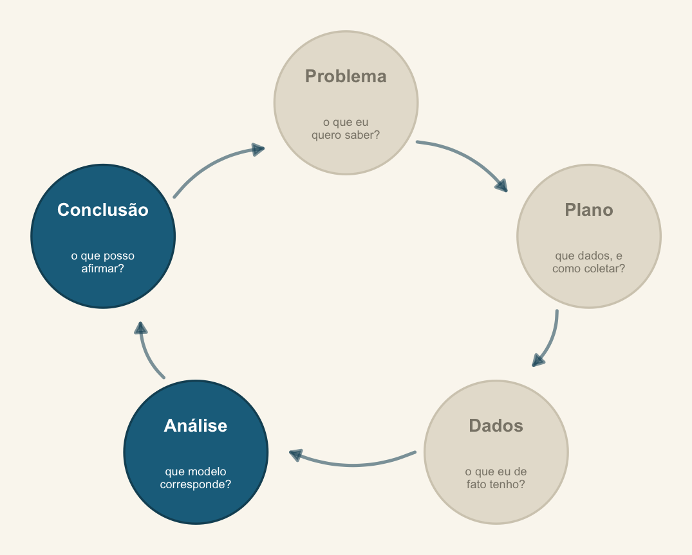
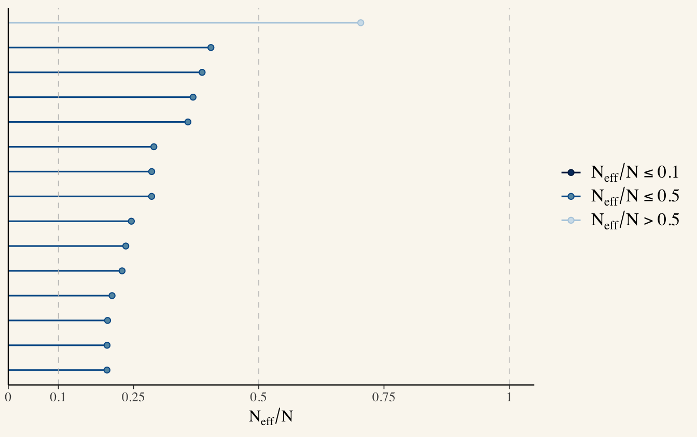
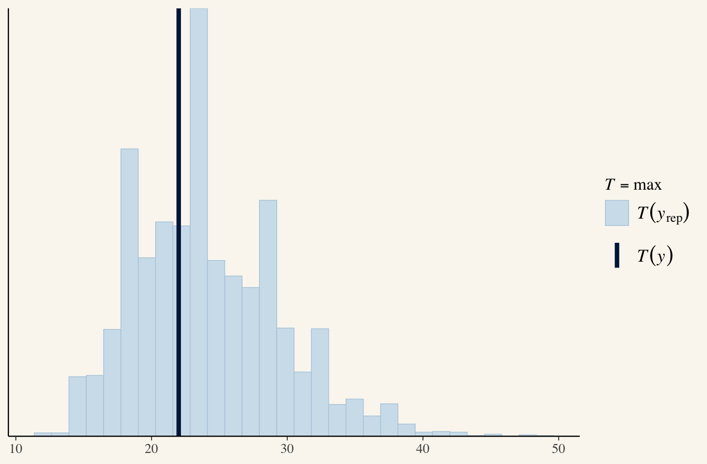
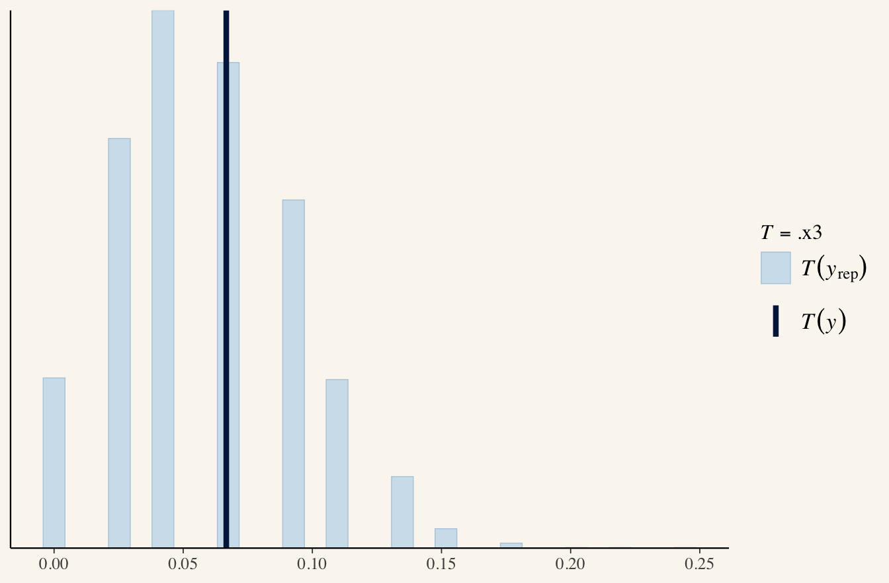

GLMM II: lme4, glmmTMB e a ponte bayesiana
Encontro 8 · Análise de Dados Univariados · PPGBA/UFMS
Diogo B. Provete
24 de setembro de 2026
Onde estamos no ciclo PPDAC
Fechamos a Análise e entramos na Conclusão: o que posso afirmar, e com que incerteza.
Dois blocos
Bloco 1 (≈ 3 h) — GLMM na prática: resposta não gaussiana, escolha do pacote, convergência, diagnóstico, relato.
Bloco 2 (≈ 1,5 h) — o mesmo modelo, os mesmos dados, em brms.
A fórmula não muda. É esse o ponto: vocês já sabem escrever o modelo bayesiano.
Bloco 1 — GLMM frequentista
Riqueza é contagem
O modelo gaussiano do encontro passado prevê riqueza negativa. Para uma contagem, isso é um defeito estrutural, não um detalhe.
GLMM de Poisson
Estimate Std. Error z value Pr(>|z|)
(Intercept) 1.662 0.174 9.569 0
NAP -0.504 0.075 -6.687 0Sobredispersão em modelo misto
A tabela de causas do Encontro 6 vale aqui — com uma a mais: a estrutura aleatória pode estar incompleta.
Três remédios:
- binomial negativa:
glmer.nb()ouglmmTMB(family = nbinom2); - efeito aleatório em nível de observação (OLRE):
(1 | id_obs); - modelar a dispersão diretamente:
glmmTMB(dispformula = ~ .).
Comparando
E o que essa tabela diz
Os três modelos ficam a menos de 2 unidades de AIC um do outro, e a razão de deviance do Poisson era 1,15. Não havia sobredispersão a corrigir. O remédio não era necessário.
Isso é um resultado, não um fracasso do procedimento. O Poisson com intercepto aleatório já dá conta: a variação que parecia excesso estava na estrutura de praias, e o efeito aleatório a absorveu.
Guardem esta conclusão. Vamos reencontrá-la à tarde, de um jeito bem mais dramático.
lme4 ou glmmTMB?
| Precisa de… | Use |
|---|---|
| LMM ou GLMM padrão (gaussiano, Poisson, binomial) | lme4 |
| binomial negativa estável | glmmTMB |
| zeros inflados com efeito aleatório | glmmTMB |
| dispersão modelada por covariáveis | glmmTMB |
| resposta Beta (proporção contínua) | glmmTMB |
| ordinal com efeito aleatório | ordinal::clmm |
O nlme ainda é preferível quando você precisa de estrutura de correlação explícita — temporal ou espacial. Fora isso, lme4 e glmmTMB cobrem quase tudo.
Convergência: o que os avisos dizem
Model failed to converge with max|grad| = ...
Na ordem de eficácia:
- Reescale as preditoras contínuas —
scale(). Resolve a maioria dos casos. - Simplifique a estrutura aleatória — tirar a inclinação aleatória, ou a correlação entre intercepto e inclinação:
(1 | g) + (0 + x | g). - Troque o otimizador —
control = glmerControl(optimizer = "bobyqa"). - Aumente as iterações —
optCtrl = list(maxfun = 1e5).
Variância zero ou correlação ±1
Ajuste singular significa que os dados não sustentam aquela estrutura aleatória — não que o modelo está errado. A resposta é simplificar a estrutura, não forçar o ajuste.
Forçar a convergência de um modelo singular produz números que não significam nada.
Diagnóstico
Dispersão e zeros
DHARMa nonparametric dispersion test via sd of residuals fitted vs.
simulated
data: simulationOutput
dispersion = 0.95663, p-value = 0.894
alternative hypothesis: two.sided
DHARMa zero-inflation test via comparison to expected zeros with
simulation under H0 = fitted model
data: simulationOutput
ratioObsSim = 1.032, p-value = 1
alternative hypothesis: two.sidedResíduos praia a praia
plotResiduals(res, form = ...) é o teste que mais rende em modelos mistos: se os resíduos ainda têm padrão dentro de um grupo, falta algo na estrutura aleatória.
\(R^2\) marginal e condicional
Marginal — variação explicada só pelos efeitos fixos. Condicional — pelos fixos e aleatórios juntos.
A diferença entre os dois é o quanto a estrutura de agrupamento explica. Relate os dois.
O que relatar (Davis & Kay 2023)
“Ajustamos um GLMM de Poisson com ligação log (
lme41.1.x), com NAP como efeito fixo e intercepto aleatório por praia (9 praias, 45 amostras). A estrutura aleatória reflete que as amostras foram coletadas em transectos dentro de praias. A razão entre deviance residual e graus de liberdade foi 1,15 e a comparação por AIC com alternativas binomial negativa e com efeito aleatório em nível de observação não indicou sobredispersão relevante (ΔAIC < 2). Diagnóstico com resíduos quantílicos simulados (DHARMa, 1000 simulações). \(R^2\) marginal = …, condicional = ….”
Sempre diga o que o efeito aleatório representa no delineamento.
Intervalo
15 minutos.
Na volta: a ponte bayesiana — o mesmo modelo em brms.
Bloco 2 — A ponte bayesiana
A mesma fórmula
Compare com a linha do bloco 1:
Reajustamos o modelo que de fato escolhemos de manhã, o Poisson com intercepto aleatório. Não o binomial negativo, que a comparação de AIC mostrou ser desnecessário.
A fórmula é idêntica. O custo de transferência é a família e três argumentos de MCMC.
E o que ele devolve
Family: poisson
Links: mu = log
Formula: Richness ~ NAP + (1 | Beach)
Data: rikz (Number of observations: 45)
Draws: 4 chains, each with iter = 2000; warmup = 1000; thin = 1;
total post-warmup draws = 4000
Multilevel Hyperparameters:
~Beach (Number of levels: 9)
Estimate Est.Error l-95% CI u-95% CI Rhat Bulk_ESS Tail_ESS
sd(Intercept) 0.61 0.21 0.33 1.16 1.01 829 1313
Regression Coefficients:
Estimate Est.Error l-95% CI u-95% CI Rhat Bulk_ESS Tail_ESS
Intercept 1.66 0.23 1.22 2.12 1.00 788 941
NAP -0.50 0.07 -0.65 -0.36 1.00 2815 2814
Draws were sampled using sampling(NUTS). For each parameter, Bulk_ESS
and Tail_ESS are effective sample size measures, and Rhat is the potential
scale reduction factor on split chains (at convergence, Rhat = 1).Lendo a saída
Rhat em 1,00 e ESS na casa dos milhares: as quatro cadeias convergiram, e a amostra da posterior é utilizável. Guardem esses dois números — no próximo slide eles reaparecem de outro jeito.
A estimativa de NAP é praticamente a mesma do glmer do bloco 1. O que muda é o que está em volta dela: em lugar de erro-padrão e intervalo de confiança, um desvio da posterior e um intervalo de credibilidade.
O que acontece se insistirmos na NB
Ajustando o mesmo modelo com family = negbinomial() nestes dados:
Further Distributional Parameters:
Estimate Est.Error l-95% CI u-95% CI Rhat
shape 6482648188764569600.00 1.31e+19 5.43 4.86e+19 3.22O parâmetro de forma foge para \(10^{18}\), e o \(\hat{R}\) de todo o modelo vai a 3,2. Não é instabilidade numérica: é a posterior dizendo que os dados não identificam esse parâmetro. Quando a dispersão extra tende a zero, a binomial negativa converge para a Poisson, e a forma tende ao infinito sem que a verossimilhança mude.
O glmmTMB devolveu, para o mesmo modelo, um ponto confortável: 15,5. Um número, sem alarme.
A mesma lição do Encontro 9, adiantada
A máxima verossimilhança escolhe um ponto e segue em frente. O MCMC percorre a posterior inteira, e por isso encontra a região plana em que o parâmetro não está determinado.
O ajuste bayesiano não criou o problema. Ele exibiu um problema que já estava no ajuste frequentista, escondido atrás de uma estimativa pontual.
Um \(\hat{R}\) alto é informação sobre o seu modelo, não um aborrecimento técnico a contornar aumentando iterações.
Por que atravessar a ponte
- Amostra pequena e poucos níveis — a prior regulariza onde o máximo de verossimilhança colapsa em ajuste singular.
- Incerteza de quantidades derivadas — sem delta method.
- Graus de liberdade — o problema do encontro passado simplesmente não existe.
- Modelos que o frequentista não ajusta — estruturas complexas, filogenia, medidas com erro.
Priors
prior class coef group resp dpar nlpar lb ub tag
(flat) b
(flat) b NAP
student_t(3, 1.4, 2.5) Intercept
student_t(3, 0, 2.5) sd 0
student_t(3, 0, 2.5) sd Beach 0
student_t(3, 0, 2.5) sd Intercept Beach 0
source
default
(vectorized)
default
default
(vectorized)
(vectorized)Fracamente informativa não é “sem informação”. É dizer ao modelo que um coeficiente de 500 na escala log é absurdo — o que você sabe, e os dados nem sempre conseguem dizer sozinhos.
Sensibilidade à prior
O teste honesto: ajuste com duas priors razoavelmente diferentes e veja se a conclusão muda.
Se mudar muito, diga isso no artigo. É informação sobre quanta evidência os seus dados carregam.
Diagnóstico de MCMC
| Sinal | Significa | O que fazer |
|---|---|---|
| \(\hat{R} > 1{,}01\) | cadeias não convergiram | mais iterações; reparametrizar |
| ESS baixo (< 400) | amostras autocorrelacionadas | mais iterações |
| transições divergentes | geometria difícil | adapt_delta = 0.99; priors mais informativas |
max_treedepth atingido |
ineficiência | max_treedepth = 15 |
Os traços das cadeias
\(\hat{R}\) e ESS em um relance


Queremos todos os pontos à esquerda do limiar em \(\hat{R}\) e à direita em ESS. Se um único parâmetro destoa, é ele que precisa de atenção — não o modelo inteiro.
Checagem preditiva posterior
Checando a estatística que interessa


O que o pp_check() pergunta
Dados simulados pelo modelo se parecem com os dados reais? É o análogo honesto do diagnóstico de resíduos — e você pode checar qualquer estatística que interesse, como a proporção de zeros.
Intervalo de credibilidade × de confiança
| Confiança (95 %) | Credibilidade (95 %) | |
|---|---|---|
| O que é aleatório | o intervalo | o parâmetro |
| Frase correta | “95 % dos intervalos construídos assim conteriam o valor” | “há 95 % de probabilidade de o parâmetro estar aqui” |
| Como quase todo mundo interpreta | como se fosse o da direita | — |
Boa parte das pessoas já interpreta o IC frequentista como se fosse bayesiano. O ajuste bayesiano apenas torna a interpretação correta.
Relato BARG
Kruschke (2021) — preâmbulo mais seis passos. O mínimo que precisa aparecer:
- o modelo, com todas as priors explicitadas;
- justificativa das priors, e análise de sensibilidade;
- diagnóstico de convergência (\(\hat{R}\), ESS, divergências);
- checagem preditiva posterior;
- o resumo da posterior — mediana e intervalo, não só o ponto;
- software, versões e semente.
A tabela de tradução
| Frequentista | Bayesiano (brms) |
|---|---|
lmer(y ~ x + (1\|g)) |
brm(y ~ x + (1\|g)) |
glmer(..., family = poisson) |
brm(..., family = poisson()) |
glmmTMB(..., family = nbinom2) |
brm(..., family = negbinomial()) |
glmmTMB(..., ziformula = ~1) |
brm(..., family = zero_inflated_poisson()) |
clmm(...) |
brm(..., family = cumulative()) |
confint() |
posterior_interval() |
DHARMa::simulateResiduals() |
pp_check() |
AIC() |
loo() — Encontro 9 |
Fechamento
O que fica de hoje
- Riqueza é contagem: GLMM de Poisson ou NB, não gaussiano.
- Ajuste singular = os dados não sustentam aquela estrutura aleatória.
- Reescalar preditoras resolve a maioria dos problemas de convergência.
- Relate \(R^2\) marginal e condicional, e diga o que o efeito aleatório representa.
brm()usa a mesma fórmula — a ponte custa três argumentos.
Prática (o resto do bloco)
- Ajuste um GLMM aos seus dados com a família adequada.
- Diagnostique com
DHARMa, incluindoplotResiduals(form = grupo). - Calcule \(R^2\) marginal e condicional.
- Reajuste o mesmo modelo em
brm(), comfile = "cache/...". - Compare as estimativas. Se diferirem, proponha uma explicação.
Para amanhã
Leitura: Burnham & Anderson (2002), caps. 2 a 4.
Amanhã de manhã: vocês vão ter vários modelos plausíveis. Como escolher — e por que “escolher” talvez não seja a pergunta certa.
Referências
- Bolker, B.M. et al. 2009. Generalized linear mixed models: a practical guide for ecology and evolution. Trends in Ecology & Evolution 24:127–135.
- Harrison, X.A. et al. 2018. A brief introduction to mixed effects modelling and multi-model inference in ecology. PeerJ 6:e4794.
- Brooks, M.E. et al. 2017. glmmTMB balances speed and flexibility among packages for zero-inflated generalized linear mixed modeling. The R Journal 9:378–400.
- Bürkner, P.-C. 2017. brms: an R package for Bayesian multilevel models using Stan. Journal of Statistical Software 80(1).
- Nakagawa, S. & Schielzeth, H. 2013. A general and simple method for obtaining R² from generalized linear mixed-effects models. Methods in Ecology and Evolution 4:133–142.
- Kruschke, J.K. 2021. Bayesian Analysis Reporting Guidelines. Nature Human Behaviour.
- Kurz, A.S. Statistical Rethinking recoded — o livro do McElreath em
brms,ggplot2e tidyverse. - Gelman, A. et al. 2026. Bayesian Workflow. Chapman & Hall/CRC. Caps. 5 (priors), 8 (checagem preditiva), 11 e 12 (ajuste e diagnóstico de convergência).
- BIOS2. Hierarchical models in ecology (curso, 2023). O Dia 4 trata separadamente hierarchy on the intercept e hierarchy on the slope, em Stan. É a explicação mais clara que conheço de por que intercepto e inclinação aleatórios são o mesmo mecanismo aplicado a coeficientes diferentes. O site não traz autoria nomeada nem citação sugerida.
- Hartig, F.
DHARMa: residual diagnostics for hierarchical regression models.
Análise de Dados Univariados · PPGBA/UFMS · 2026/2